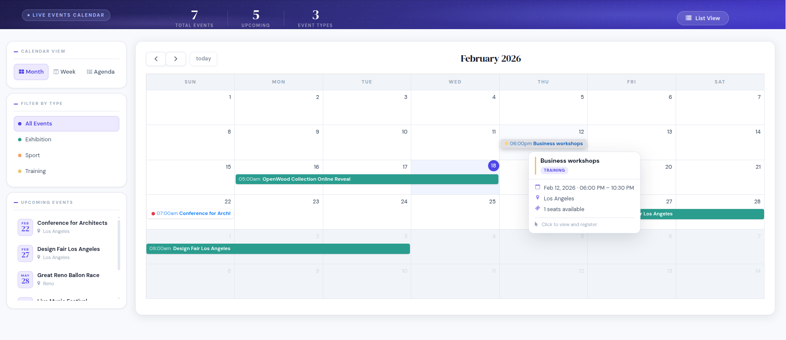
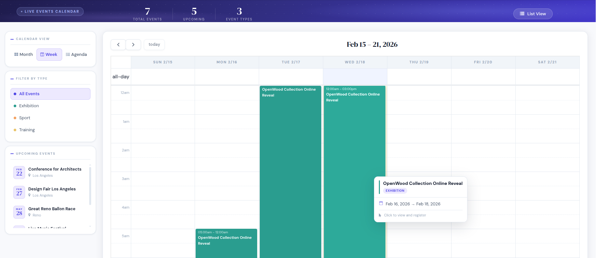
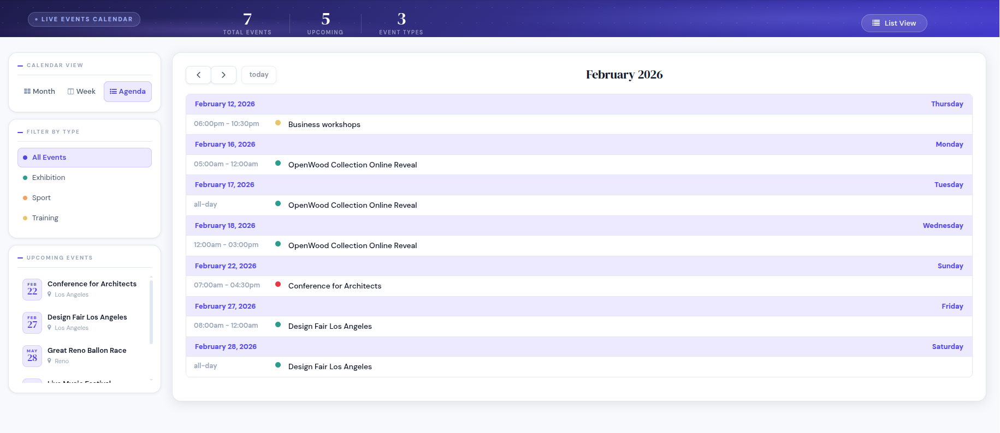
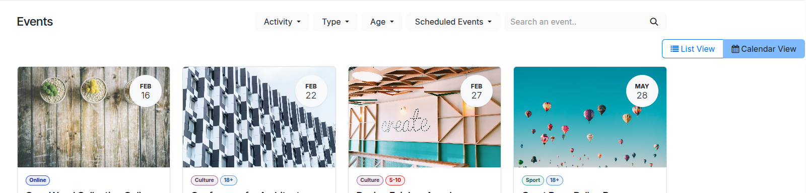

Transform your Odoo website events into a beautifully interactive public calendar. Monthly grid, weekly timeline, agenda list — with live event type filters and zero configuration required. Install and it works immediately.

Monthly Calendar View — full grid with color-coded event categories and type filter chips
Let your website visitors browse events the way they prefer — toggle between views with a single click.

Weekly View — hour-by-hour timeline with duration blocks

Agenda View — clean chronological list with date group headers

Seamless toggle — Calendar and List view buttons sit naturally in the Events page header
Installed in minutes, works out of the box with your existing Odoo website events. No template editing. No JavaScript configuration.
Classic month-at-a-glance calendar with event chips on each day. Navigate months with smooth transitions. Events are color-coded by type for instant recognition. Supports multiple events per day, stacked cleanly. "Today" highlighting for quick orientation.
Hour-by-hour weekly layout showing exactly when events happen during the day. Event blocks are sized proportionally to their duration. Perfect for busy weeks with multiple events. Navigate week-by-week with full compatibility with event type filters.
Clean chronological list of upcoming events — perfect for visitors who want to quickly scan what is coming without navigating a grid. Date group headers for easy scanning. Fast to read, easy to act on. Direct links to event registration pages.
Visitors can filter the calendar by event type in one click — showing only conferences, webinars, workshops, or any category defined in Odoo. Filters work instantly across all three views without a page reload.
The calendar adapts perfectly to mobile phones, tablets, and desktops. Touch-friendly navigation, readable event chips on small screens, no horizontal scrolling required on any device size.
A clean view-switcher button appears directly in the Odoo events page header. Visitors switch between the original list layout and the new calendar view instantly. The existing list view behavior is completely unchanged.
Designed to complement the Odoo website theme system. Clean typography, smooth hover states, and subtle color accents make your events look polished and credible. Compatible with all standard Odoo website themes.
Install the module and the calendar view appears automatically on your website events page. No XML to edit, no JavaScript to configure, no template overrides. Works immediately with all existing event records.
Works directly with the event.event model. All your existing events, registrations, and event types show up automatically in the calendar — no data migration, no re-entry, no configuration. Just install and go.
If you run events on an Odoo 19 website, this calendar belongs on your site.
Display multi-day conference schedules, workshops, and keynotes clearly across monthly and weekly views. Let attendees browse the full programme at a glance.
Let students browse available course dates by month and filter by course type. No more digging through a long list to find the right session.
Share internal or public event calendars with employees and clients using your existing Odoo website infrastructure.
Showcase performances, exhibitions, and shows on a visual calendar that visitors can browse at their own pace.
Publish member meetups, community events, and volunteer opportunities in a format members actually want to use.
Promote in-store events, product launches, and seasonal workshops with a calendar that integrates seamlessly with your Odoo shop.
Hackathons, webinars, meetups — display them all in an agenda view that loads fast and reads cleanly on any device.
Use event type filters so visitors instantly see only the events relevant to them — by category, format, or topic.
Drop into your custom addons folder, install from the Apps menu — done. No external Python packages, no npm, no build step required.
Need help, support, or customization?
Reach out at raj.odoo2026@gmail.com